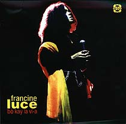

- Louis Moholo-Moholo Septet |
||
| - Bò kay
la vi-a (OGUN 1999, c/o Cadillac Jazz distribution) Francine released her first CD with the following world class musicians: Louis Moholo, Paul Rogers, Keith Tippett, Paul Rutherford, Claude Deppa and Evan Parker |
 | |
| - Everything is possible (2000) |
||
| - Fish of the week (SCATT’ER
1996) |
||
| - Radius sightseeing (EAR-RATIONAL
RECORDS 1989) |
||
| - Gland Fonolite Group (SPLASC(H)
Records 1988) |
||